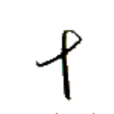
ネゥㇳ⤴ 【六】
[連体詞] 6つの
[名詞] 6
[略号] (音楽)基準音の11半音上の音、(移動ドで)シの音
大月島 マー→シェㇺ→ドㇷ゚→ 【大月島】
[名詞] リナエスト本島、ブリェーシャン島
リナエスト・オルス共和国を構成する島のうち面積が最大の島。
大遠小周 マー→トゥアイ⤴ニー→セイ⤴ 【大遠小周】
[成句] 大きな目標とは手の届かないところにあり、小さな目標はすぐ近くにあるため、身の回りの人々やことがらを大切にすることが大事であるということ。
大律 マー→ヤㇰ→ 【大律】
[名詞] マーヤック、官民分離憲法
国家の役割の規定と市民の権利の規定が同一文書に入らない憲法を指す、憲法学の用語。
大翰 マー→クアイ→ 【大翰】
[名詞] 事務監長（アイル共和国の省庁の筆【筆】において 10 番目に低い階級）
大将 マー→ワイ→ 【大将】
[名詞] 実働監長（アイル共和国の省庁の兵【兵】において 10 番目に低い階級）
大筆 マー→クアー⤴ 【大筆】
[名詞] 事務員長（アイル共和国の省庁の筆【筆】において 5 番目に低い階級）
大兵 マー→カウㇰ⤴ 【大兵】
[名詞] 実働員長（アイル共和国の省庁の兵【兵】において 5 番目に低い階級）
骨門大集 ホウ⤴ギアウ→マー→ダㇳ⤴ 【骨門大集】
[名詞] 大オキヤウ郡、シェプ・オキヤウ郡（アイル共和国の郡名）
叫二字 プアㇰ→イㇰ⤴マン→ 【叫二字】
[名詞] パイグ語の発音現象の一つ。善日【善日】などに見られる。
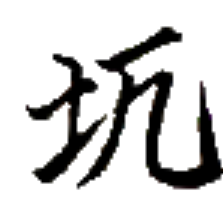 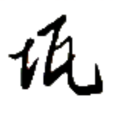
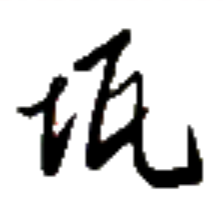
アㇺ· 【御】【禦】
[接頭辞] (名前などの前につけて)偉大なる～、～様
[接頭辞] (状態動詞の前につけて)～化する
足錘 シー→ショウ⤴ 【足錘】
[名詞] 足かせ
ラネーメにおいては抑圧の象徴と考えられることもある。
足錘貧樽 シー→ショウ⤴ヘイ⤴トウ⤴ 【足錘貧樽】
[名詞] 人によって何画で書くか差があるような字のこと。
足手 ショㇷ゚→ 【足手】
[名詞] 手足、動物の足
発音が縮約されることに注意。
刀足 ガウ⤴シー→ 【刀足】
[名詞] ギューシュ、ガウシー（橅に似る木の一種）
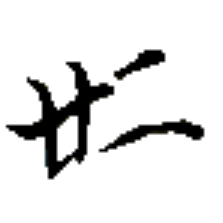
ポウ→ 【道】
[名詞] 道、選択肢
[略号] 連道集【連道集】（アイル共和国交通省）
迷道 バウ⤴ポウ→ 【迷道】
[離合詞] (物理的に)道に迷う、(人生において)進路に迷う
モㇰ→ 【行】
[名詞] 動き、行い、変化
[動詞] 動く、行動する、変化する、変化させる、～になる
[前置詞] ～へ
行山 モㇰ→ツォウ→ 【行山】
[動詞] 山に行く、山登りする
[名詞] ボードゲームの一種
上行 ザウ⤴モㇰ→ 【上行】
[動詞] 上る、昇る、登る、上昇する
[動詞] 勝利する、勝利者となる
再行 ティュ·モㇰ→ 【再行】
[動詞] 再開する、再び行う
[動詞] (セッカイクで) 季【季】を続行する
[間投詞] (セッカイクで) 季【季】を続行
無抗行処 ムン→マㇰ→モㇰ→ホエゥ· 【無抗行処】
[成句] 向かうところ敵なし
[名詞] セッカイクの役のひとつ
心古行新 ヒアー→ズィアー→モㇰ→ルー⤴ 【心古行新】
[成句] 古いことを思いながらも新しいことに挑む、温故知新
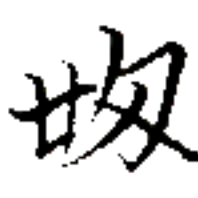
バイㇰ· 【遅】
[状態動詞] 遅い
[副詞] ゆっくりと、のろのろと
光龍卵 アイㇰ⤴ホイ⤴ウェゥㇳ· 【光龍卵】
[名詞] 光る龍の卵、読心の光龍卵
羅古論【羅古論】の説話大遠小周【大遠小周】に登場する、食べることによって人の心が読めるようになるとされる龍の卵。実在しない。
 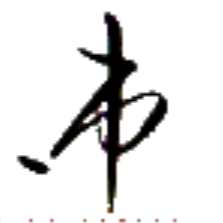
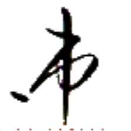
ズー→ 【銭】
[名詞] お金、ズー（東諸島共和国連合の通貨単位）
[略号] 定銭集【定銭集】（アイル共和国財務省）
 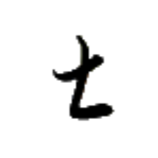
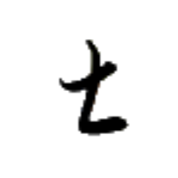
 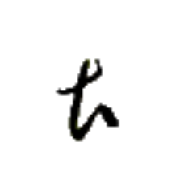
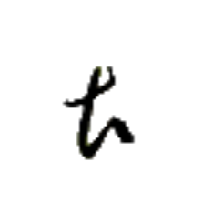
 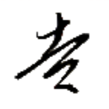
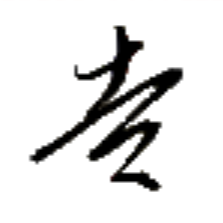

 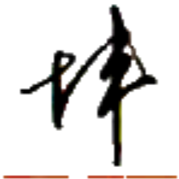
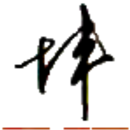
 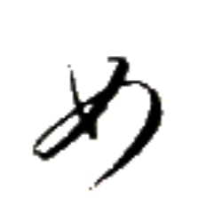
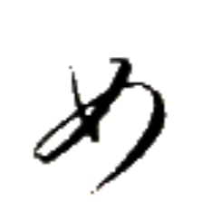
 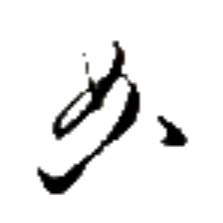
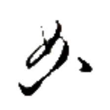


 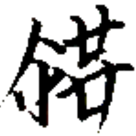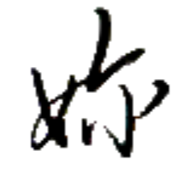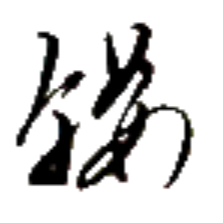
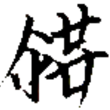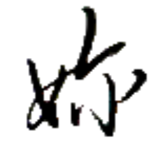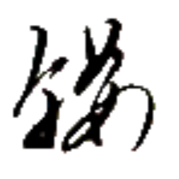
 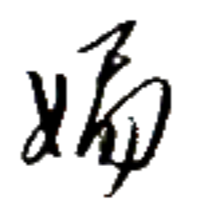
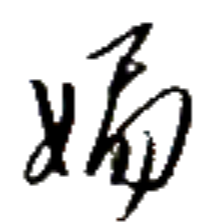

 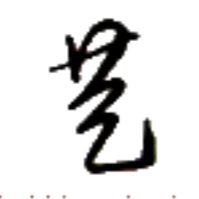
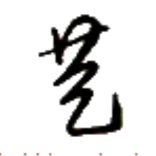